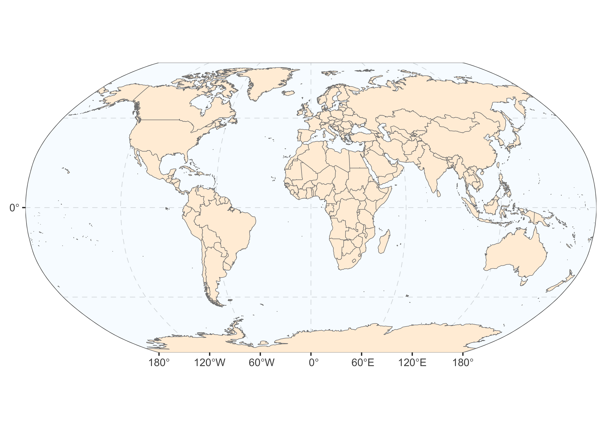

1 Introduction: turning questions into models
Suppose you are a researcher interested in the underpinnings of human well-being. In simple terms, your question is: How does human well-being work? Trying to answer such a broad question might sound a bit overwhelming at first. Where do you even start? Well, a good place to start is to make a simple but fundamental observation: well-being is not identical for everyone at all times. Some people seem to fare better than others, and the same individuals will feel more or less content and happy at different points in their lives. To convey this fact we say that well-being is a variable. Looking at well-being as a variable is useful because it lets you reformulate your original question in a more precise and approachable way: why is it that some people are happier than others? Why do people feel better at some moments in their life and less so at others? To understand how well-being works, you would need to explain this variability.
We can try to formulate possible explanations, or hypotheses. Well-being might be affected by one’s physical health, income, and personality, for instance. It might also depend on the type of neighbourhood one lives in, the quality of one’s relationship with family and friends, and exposure to violent experiences like war or natural disasters (notice how these hypotheses involve other variables).
If you think about it long enough, you will eventually come to realize that the possible determinants of well-being are so numerous that listing them exhaustively seems like an impossible task. The example of well-being is not an exception in that regard. Phenomena investigated by social scientists are, as a rule, tremendously complex. They are the product of an amount of causes so vast that identifying all of them is virtually impossible. This complexity inherent in our phenomenon of interest is one of the key reasons why our attempts at explanation will inevitably result in a simplification of reality. When conducting data analysis, such a simplification of reality is called a model.
Variables, hypotheses, and models all play a fundamental role in the practice of data analysis. They are tools that help us confront our theories about how the world works to reality. In the remaining of this chapter, we will build a more precise understanding of these notions and how to use them in practice.
1.1 Variables
We have seen that well-being can usefully be considered as a variable to convey that it is not identical for everyone and at all times. The same is true for things like personality, gender, income, or nationality. You might notice that, by calling all these information “variables”, we are lumping quite different things together: income, for instance, is a quantity - it can meaningfully be represented by a number - while gender is not. Distinctions of this sort are important, and we will discuss them in due course. For now, suffice it to say that
A variable is a quantity or a quality that varies.
1.1.1 Theoretical and operational variables
But what do we mean exactly when we use the word “well-being”? Is it the same as happiness? Or satisfaction with one’s life? One of your tasks as a researcher will be to define your phenomenon of interest as clearly possible. We call such clearly defined concept a theoretical variable (or a theoretical construct).
For instance, having thoroughly reviewed the existing knowledge on the topic, you might conclude that the notion of well-being can be defined as a special case of the sentiment of satisfaction. This sentiment of satisfaction, you add, is not related to any particular aspect of the person’s life, but rather about all aspects considered together. Hence, you decide to define well-being as an individual’s degree of satisfaction with their life considered in all its aspects. This would be your theoretical variable.
Note that defining a theoretical variable (well-being, in this case) has less do to with laying out what well-being ‘truly is’ than with being clear about what you mean when using the term.1 After all, definitions of terms are conventional: a term can be said to have a “true meaning” only in the sense of a meaning that is agreed upon by some set of people. What matters the most when defining your theoretical variable is to be clear – i.e., to leave as little ambiguity as possible regarding what it does and does not refer to in the real world. But this does not mean that you can just ignore how you theoretical variable is usually defined by other scientists, or even among the general public. Conventions in terminology facilitate smooth communication, and departing from them can result in misunderstandings. Claiming to study “well-being” while actually defining that term as an individual’s preference for cats over dogs would be confusing for no reason, no matter how clear the definition. In sum, you should depart from conventional definitions only if you have good reasons to do so, such as when it helps distinguishing your theoretical variable better from closely related concepts.
A theoretical variable is the concept of interest defined in abstract and general terms.
Having clearly defined your theoretical variable is not enough, however, because such a variable cannot be directly observed the real world. Think about well-being: however clearly you define it, you cannot simply observe a person and self-evidently know their well-being. You will need to find a concrete procedure to extract the information corresponding to your theoretical concept in the real world. Such procedure is what we call measurement. And the information obtained through measurement is the operational variable.
Since in our example we defined our theoretical variable in subjective terms – through the feeling of satisfaction – you could reason that the best way to extract the corresponding information would be to directly ask people. You might thus devise a questionnaire including a question similar to the following: thinking of your life as whole, how satisfied would you say you are on a scale ranging from 1 (not satisfied at all) to 10 (completely satisfied)?
Ideally, you should select a measurement procedure with the aim that the resulting operational variable should faithfully and reliably reflect the theoretical variable. Consider the measure of well-being proposed in the previous paragraph, for instance. If an individual happen to be in a bad mood while answering the question, the negative aspects of her life might come to her attention more readily than the positive ones. This might lead her to rate her own well-being lower than she would have earlier or later that day. If the aim is to capture satisfaction with one’s life as a whole, a measurement wouldn’t be very reliable if its outcome were to change with every mood swing. An alternative strategy could be to present participants with a series of questions, each focusing on a specific aspect of their life (e.g., finances, physical health, friendships, etc.) and aggregate all answers into a composite score. This way, participants would be prompted to pay attention to the different facets of their life instead of being guided by what their transient state of mind brings to their attention.
An operational variable is the information, obtained through a concrete measurement procedure, used to represent real-world realizations of the theoretical variable.
This example illustrates that devising a measurement procedure that yields a sound operational variable can be a tricky endeavour. Researchers have developed a set of tools that can help us in this task. We will discuss some of these tools later. In the meantime, examples of work attempting to defining well-being as a theoretical variable and proposing a rigorous way to measure it can be found in Diener et al (2010) and Weziak-Bialowolska et al (2021).
1.2 Hypotheses
Remember what thinking in terms of variables taught us: to explain well-being, you would need to find explanations that account for its variability in the real world. And we saw that we could think of many possible explanations. Let us consider one of them: well-being is affected by income. We will call this statement a hypothesis. There are at least three features that a good hypothesis should satisfy.
Firstly, one thing that makes the sentence well-being is affected by income a valid hypothesis is that it is a statement. On the contrary, the sentence is well-being affected by income? is a question rather than a statement and, hence, doesn’t qualify as a hypothesis.
A second thing to note about this statement is that it indicates that well-being is explained by another variable: income. Just like well-being, income is not the same for everyone, and can vary from time to time for a given individual. Hence, income is also a variable. And our hypothesis states that this variable explains well-being. This is the form most hypotheses take: they are statements about a relationship between variables.
Thirdly, notice that we are stating something that we don’t actually know. Maybe income does affect well-being, maybe it doesn’t. We might have a strong belief about it, but it is crucial to always consider that our belief might turn out to be false. Indeed, the very purpose of a hypothesis is to formulate a factual statement that can be confronted with observations in the real world. Therefore, a statement qualifies as a hypothesis only if it is in principle possible to prove it wrong through observation. That is, we should be able to think of a situation in which what we observe will show us that the hypothesis is false, if it is indeed false. We say that a hypothesis must be falsifiable.
To make this last point clearer, consider the statement well-being is undermined by memories of childhood trauma even if those memories have been suppressed. Try to think of an observation that would prove this statement wrong. For instance, you could ask a large number of individuals to recall any childhood trauma and then compare the well-being of those who recall traumatic experiences to the well-being of those who don’t. But even if well-being turns to be exactly the same in both groups, the statement implies that those who don’t recall any trauma could have in fact suppressed such memories. Whatever observation we make, it seems that we can always “save” the statement from being proven wrong by invoking the notion that memories can be suppressed and, hence, can remain undetected. This statement thus appears unfalsifiable. It is not a valid hypothesis.
A hypothesis is a statement, either about a variable or (more typically) about the relationship between variables, which is in principle falsifiable through observation.
Note how the definition above leaves room for hypotheses that concern only one variable. For instance, the statement “Among humans, it is more frequent to be born a female than a male” is a valid hypothesis (it is a falsifiable statement) that refers to one variable only (sex).
1.2.1 Dependent and independent variables
When we hypothesize that two variables are related, we usually specify the relationship a bit further. If I say Well-being is affected by income, well-being and income are both variables, but one (well-being) is the thing we are trying to explain whereas the other (income) is the proposed explanation. We call them dependent variable and independent variable, respectively (see Figure 1.1).
In the context of a hypothesis, the dependent variable is the variable that we are trying to explain whereas the independent variable is the variable that we hypothesize to explain the dependent variable.
Note that this not the only terminology used by scientists. A dependent variable is also called an outcome or a response variable. And an independent variable is also referred to as a predictor or an explanatory variable.
One reason often invoked for preferring these alternatives is that the terminology of dependent and independent variable is usually understood as implying a causal relationship. And causality is a very difficult thing to test in practice. Thus, when researchers consider that they are in no position to test the existence a causal relationship, they often opt for a terminology that does not evoke causality in the first place.
1.2.2 Theoretical and operational hypotheses
Recall our distinction that we made Section 1.1.1 between theoretical and operational variables. Since hypotheses talk about variables, it should seem natural to similarly distinguish two types of hypotheses:
A theoretical hypothesis is a general statement about the relationship between theoretical variables.
An operational hypothesis is a statement about the relationship between operational variables in a clearly specified study setting.
1.3 Modelling
As social scientists, we should always remember that the phenomena we wish to explain are extremely complex. This means that we should abandon the illusion that we could explain them perfectly. Rather, we will rely on simplified descriptions which capture relevant and useful aspects of reality. We call such a simplification of reality a model.
1.3.1 Why do we need models?
To understand why, let us consider once again hypotheses that could explain why well-being is not identical for everyone and at all times. It might be because well-being changes depending on variables like income, personality, physical and mental health, gender, life events, relationships, diet, sleep quality, and so on. The important thing to realize is that this list could go on. And on. Identifying all the variables that could potentially explain well-being is so difficult that we might as well consider it impossible in practice.
But even if we could know all the variables that affect well-being (which we can’t), grasping how exactly these variables influence well-being is way beyond what our minds can handle. Take the hypothesis that income fosters well-being: what amount of money exactly makes a difference? And does more income always lead to more well-being or is there an amount beyond which earning more doesn’t make any difference? Are there personalities or cultures for which income matters more for well-being? Such questions also could go on.
And finally, even if we knew all the relevant variables and understood how exactly they shape well-being (which, again, we can’t), it would be impossible to measure them all and to do so with perfect accuracy. Measuring things takes time and resources, and measuring all the variables that might be relevant would require a gigantic amount of both. Moreover, some variables are very difficult to measure accurately. Think of any variable that is inherently subjective: well-being, personality, beliefs, emotions, and so on.
Three reasons for humility
It is virtually impossible to identify all the variables that explain a given phenomenon.
It is virtually impossible to grasp how these variables influence our phenomenon of interest.
It is virtually impossible to measure all the variables that explain a given phenomenon and to do so with perfect accuracy.
1.3.2 What is a model?
Thus, our attempts at explaining a phenomenon will necessarily result in a simplification of reality. This might sound disappointing. But simplifying a complex reality can actually be a very useful thing to do. Consider for instance a simple map of the world, like the one shown on the right of Figure 1.2.

In a sense, we can say that such a map describes the surface of our planet. Of course, it does so in a very incomplete and inaccurate way: lots of complicated stuff that characterize the earth’s surface at any given time are not depicted on this map, like weather-related processes happening in the atmosphere, variations in topography, the organisation and movement of tectonic plates, water streams circulating in the oceans or the many billions of living creatures populating the surface. But it is precisely because such a map is an incomplete description that it is useful to us. By extracting a few features from a highly complex reality, it makes it manageable for our minds to grasp relevant information which, otherwise, would be drown in an ocean of complexity. Thanks to the simplicity of the map, we can clearly identify the parts of the earth’s surface that are not covered by water, how this landmass was partitioned into countries by humans, and their geographic locations relative to the poles and the equator. The map is thus a simplification of the reality it aims to describe – i.e., the earth’s surface. But it is an informative simplification. We can say that the map is a model of the earth’s surface.
A model is a simplified representation, which aims at describing relevant aspects of reality while ignoring others.
1.3.3 Data analysis as the art of modelling
Now that we have established an intuitive understanding of what a model is, we are ready for the most important insight you should take away from this chapter: Data analysis is the art of building and interpreting statistical models. What this means, and what we will see throughout this book, is that doing data analysis virtually always comes down to applying the fundamental principle described in the equation in Box1.1 (see Judd et al., 2017). Let us unpack what this equation means.
The fundamental principle of data analysis
\[ Data = Model + Error \]
In the context of a scientific study, the phenomenon we wish to explain will be represented by a set of data. Our task is to build, based on the information at our disposal, an explanatory model that best accounts for these data.
Suppose you hypothesize that well-being depends on income. You ask 100 people their income (in dollars) and measure their well-being on a scale ranging from 1 to 10. The scores of well-being would be the data we are trying to explain, and the income is the information we can use to build a model. Applying our general equation in Box1.1 to this imaginary data, we could obtain something like this:
\[ Wellbeing_i=-5.261+0.005 \times Income_i+Error_i \] Or using more conventional notations:
\[ Y_i=-5.261+0.005X_i+e_i \tag{1.1}\]
What the numbers in Equation 1.1 mean, and how to obtain them, is not important now. We will cover that in due course. What matters at this point is that you get a feel of how the elements making up the fundamental equation shown in Box1.1 might look like in a concrete case.
Now, let us use this example to understand what our fundamental principle means. In Equation 1.1, the symbol \(Y_i\) represents Well-being, our dependent variable. This is the thing we are trying to explain, the Data. (The subscript \(i\) is there to remind us that \(Y\), Well-being, can take different values. Its exact meaning will become clear in the next chapters).
The Model is given by the expression \(-5.261+0.005X_i\), where \(X_i\) represents Income, our independent variable. A statistical model, like this one, is a mathematical expression, usually very simple, that generates guesses about what the data are. We say that the model makes predictions about the data. You can think of it a little prediction machine. And we can give it information to base its predictions on. In this case, for instance, we used Income, \(X_i\), as an information for the model to use in generating predictions.
A statistical model is a simple mathematical expression that generates guesses (predictions) about what each data point is.
A model prediction is what a data point should be according to the model.
But remember that our model will, as a rule, be a simplification of reality; it will not completely explain the data. In practice, this means that there will be some discrepancies between our model predictions and the actual data. We say that our model will make errors. These errors are represented by the symbol \(e_i\) in Equation 1.1.
An error is the distance between a model prediction and the corresponding data point.
Mathematically, an error has a very straightforward definition. Given the general equation
\[ Data = Model + Error \]
we can isolate the Error term by subtracting the Model term from sides of the equation:
\[ Data - Model = Error. \]
Thus:
\[ Error = Data - Model \]
Using conventional notations, we express exactly the same equation as
\[ e_i = Y_i - \hat{Y}_i \]
Where \(\hat{Y}_i\) represents the predictions made by our model.
Thus, it follows from our fundamental equation that the error corresponds to the difference between a given data point and the corresponding prediction made by the model.
1.3.4 Two criteria that define a good model
A statistical model, we saw, is just a mathematical expression that generates predictions about what the data are. But this definition is very broad: it leaves us with infinitely many options as to what particular model we choose for a given set of data. So, how do we choose? What model should we prefer over all others? There are two criteria that will guide us.
The first criterion is the most obvious: our model should make the least possible amount of errors in its predictions. At the end of the day, our purpose is to explain the phenomenon represented by the data. The more our model predictions differ from the data, the further it gets from achieving this purpose. In other words, the less errors our model makes, the better it explains the data.
The second criterion is more subtle. To understand it, remember why we use models in the first place. We know that the data we are trying to explain represent a complex reality generated by a vast amount of intricate causal processes. The point of using a model is to simplify this complexity by extracting relevant information that is useful to us (see Section 1.3.2). In other words, the very usefulness of a model lies in its simplicity. Thus, our model should be as simple as possible.
Two virtues of a good model
Accuracy: A good model should make as little prediction error as possible.
Simplicity: A good model should be as simple as possible.
The philosopher of science Karl Popper (Popper, 2020) has criticized the view – which he associates with Aristotle – that concepts have a true essence that our definition should reflect. Rather, Popper argues, scientific concepts are just labels that we put on real-world processes. Thus, it does not really matter which label we use to refer to a given process, as long as we clearly define what our label refers to and use our terminology consistently. Popper refers to his view as “methodological nominalism” as opposed to Aristotle’s “methodological essentialism”.↩︎